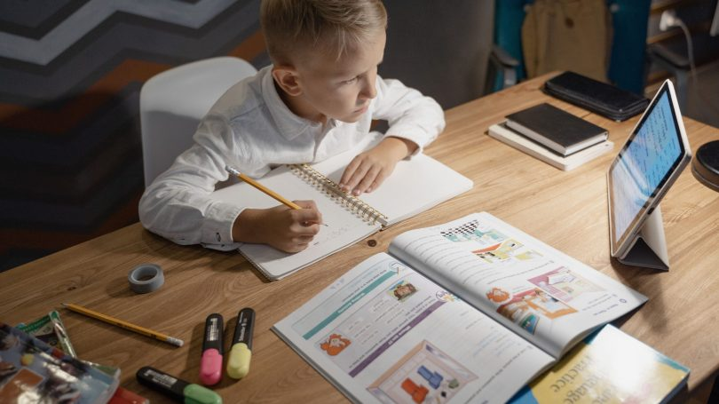

Recommended teaching strategy name :

INTRODUCTION
Independent learning is an educational approach that encourages students to take charge of their own learning process. By fostering self-reliance, critical thinking, and problem-solving skills, independent learning helps students become more autonomous and responsible learners. This strategy promotes active engagement with content, where students set their own learning goals, manage their time, and seek resources, all of which contribute to deeper understanding and mastery of the subject matter.

DETAILED DESCRIPTION
What is Independent Learning?
Independent learning is the process by which students actively take responsibility for their own learning. It involves students
engaging in tasks without direct supervision or constant guidance from the teacher. In independent learning, students set their
own learning goals, seek out resources, reflect on their progress, and solve problems on their own. This approach empowers
students to become lifelong learners by developing their critical thinking, research skills, and self-discipline.
A Look at Independent Learning:
- Self-Directed Learning: Students plan, monitor, and evaluate their learning process.
- Ownership of Learning: Students take responsibility for their progress, which helps them feel more invested in their education.
- Critical Thinking and Problem Solving: Encourages students to think critically about the material and find solutions independently.
- Increased Motivation: When students have more control over their learning, they are often more motivated and engaged
- Time Management Skills: Helps students develop the ability to manage their time effectively and prioritize tasks.
- Life-Long Learning: Fosters a mindset of continuous learning, where students take initiative and are prepared to learn outside the classroom.
How Independent Learning Can Be Implemented?
- Encourage Goal Setting and Planning
- Guide students to set clear, achievable goals for their learning and break them into smaller, manageable tasks.
- Teach students how to create action plans, allocate time for each task, and track progress.
- Provide Learning Resources
- Offer a variety of resources that students can use independently, such as online courses, videos, articles, and reference books.
- Allow students to choose which resources they prefer or find most useful for their learning.
- Promote Self-Assessment and Reflection
- Encourage students to regularly assess their own understanding and reflect on their progress.
- Provide opportunities for students to evaluate their learning, identify areas of strength and weakness, and adjust their strategies accordingly.
- Use Technology for Learning
- Incorporate digital tools and platforms that support independent learning, such as educational apps, e-books, and interactive learning platforms.
- Enable students to use technology for research, collaboration, and accessing information on their own.
- Provide Opportunities for Independent Research
- Encourage students to pursue topics or projects that interest them, promoting deeper learning and engagement.
- Allow students to explore subjects in greater detail and guide them in the research process.
- Offer Support and Guidance When Needed
- While independent learning emphasizes autonomy, it's important to provide guidance when students face challenges.
- Schedule check-ins or offer office hours for students to ask questions and receive support without micromanaging their learning.
EXAMPLE OF TEACHING VIDEO